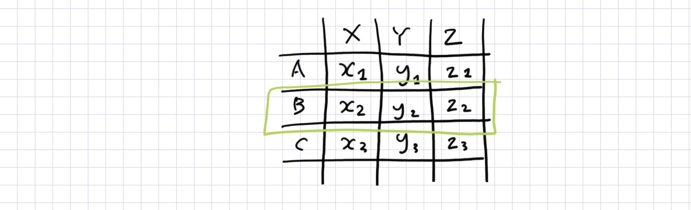

Pandas
The case
Here is a typical CSV data, which is a data in a 2 dimensional table form:
| name | area | population | … |
|---|---|---|---|
| Monaco | 1.98 | 36,371 | … |
| Gibraltar | 6.8 | 29,431 | … |
| Vatican City | 0.44 | 900 | … |
| … | … | … | … |
Let’s pick a column from the table:
| area |
|---|
| 1.98 |
| 6.8 |
| 0.44 |
| … |
The data in this column is homogeneous; all the values are in the same type, the decimal number.
Let’s pick a row from the table:
| name | area | population | … |
|---|---|---|---|
| Monaco | 1.98 | 36,371 | … |
The data in this row is heterogeneous; the values are in different types, text(name), decimal(area), and integer(population).
Homogeneity is good for speed. If your data is homogeneous, each value can be stored in the same length of memory. This allows faster access to each value, because you can jump between memory addresses by calculating the distance between values. Both NumPy and Pandas support such technique.
But real-life data are heterogeneous. NumPy enforces complete homogeneity within data, e.g. integer matrix. If you have varying types, NumPy will treat them as the heavy object type. But in Pandas, you can have a mix of homogeneity and heterogeneity, perfect for representing data tables.
The application
Pandas provides a DataFrame class that represents 2 dimensional tabular data. It is very similar to R programming language’s dataframe class.
Although being a great tool, Pandas has some oddities that will be explained later on:
- Having multiple ways of getting the same value, some ways being read-only and some read-write
- Using
[], attributes,.loc, and.iloc
- Using
- The confusing relationship between indices and labels
- Namely,
.sort_index()that sorts by labels, not indices
- Namely,
Pandas can be easily installed via pip.
1. Creating DataFrame
The examples below suppose a countries.csv file with the following contents:
name,area,population
Monaco,1.98,36371
Gibraltar,6.8,29431
Vatican City,0.44,900
1.1. DataFrame from/to CSV
Use
pandas.DataFrame.from_csv() to create a DataFrame object from a CSV
file:
>>> import pandas as pd
>>> df = pd.DataFrame.from_csv("countries.csv", index_col=None)
>>> df
name area population
0 Monaco 1.98 36371
1 Gibraltar 6.80 29431
2 Vatican City 0.44 900
You can be more explicit with
pandas.read_csv():
>>> df = pd.read_csv("countries.csv", header=0, names=("v1", "v2"), index_col=0, dtype=str)
>>> df
v1 v2
Monaco 1.98 36371
Gibraltar 6.80 29431
Vatican City 0.44 900
Use
pandas.DataFrame.to_csv() to write a DataFrame object to a CSV file.
>>> df.to_csv("countries.csv", index=False)
1.2. DataFrame from 2D list
Use
pandas.DataFrame.from_records()
to create a DataFrame object from a list of lists/tuples:
>>> data = [("Monaco", 1.98, 36371), ("Gibraltar", 6.8, 29431), ("Vatican City", 0.44, 900)]
>>> df = pd.DataFrame.from_records(data, columns=("name", "area", "population"))
>>> df
name area population
0 Monaco 1.98 36371
1 Gibraltar 6.80 29431
2 Vatican City 0.44 900
Or from a list of dicts:
>>> data = []
>>> data.append({"name": "Monaco", "area": 1.98, "population": 36371})
>>> data.append({"name": "Gibraltar", "area": 6.80, "population": 29431})
>>> data.append({"name": "Vatican City", "area": 0.44, "population": 900})
>>> df = pd.DataFrame.from_records(data)
>>> df
area name population
0 1.98 Monaco 36371
1 6.80 Gibraltar 29431
2 0.44 Vatican City 900
But note that Python’s dict does not keep orders. When using a list of dict, column names are automatically generated from dict keys; but they may not be in your favorite order. However, you can easily reorder the columns:
>>> df = df[["name", "area", "population"]]
>>> df
name area population
0 Monaco 1.98 36371
1 Gibraltar 6.80 29431
2 Vatican City 0.44 900
How this works is explained in the next section.
2. Indexing DataFrame
2.1. Select columns and cells like a dict or an object
You can index DataFrame just like a dict. There’s one thing: in NumPy, rows come first, but in Pandas you can have columns come first.
>>> df
name area population
0 Monaco 1.98 36371
1 Gibraltar 6.80 29431
2 Vatican City 0.44 900
>>> df["name"]
0 Monaco
1 Gibraltar
2 Vatican City
Name: name, dtype: object
>>> df["name"][0]
'Monaco'
You can also access columns as attributes.
>>> df.name
0 Monaco
1 Gibraltar
2 Vatican City
Name: name, dtype: object
>>> df.name[0]
'Monaco'
Slicing is also supported, which is useful for reordering columns.
>>> df[["name", "area"]]
name area
0 Monaco 1.98
1 Gibraltar 6.80
2 Vatican City 0.44
>>> df[["area", "name"]]
area name
0 1.98 Monaco
1 6.80 Gibraltar
2 0.44 Vatican City
But you shouldn’t set a value this way:
>>> df["name"][0] = "Monaco"
__main__:1: SettingWithCopyWarning:
A value is trying to be set on a copy of a slice from a DataFrame
See the caveats in the documentation: http://pandas.pydata.org/pandas-docs/stable/indexing.html#indexing-view-versus-copy
The error message is kind enough to offer a link to a documentation page. But for the busy and lazy, here’s a summary: chain indexing like df["name"][0] makes two __getitem__ calls internally, so it’s significantly slower when setting values. To go around this, see the next section on using a single .loc for setting(and getting) values.
2.2. Select rows and cells with .loc and .iloc

df.loc is another dict-like way to index a DataFrame object, but this time rows come before columns.
>>> df.loc[0]
name Monaco
area 1.98
population 36371
Name: 0, dtype: object
>>> df.loc[0, "name"]
'Monaco'
You can safely set values with .loc.
>>> df.loc[0, "name"] = "MONACO"
>>> df
name area population
0 MONACO 1.98 36371
1 Gibraltar 6.80 29431
2 Vatican City 0.44 900
Slicing, of course, comes naturally. There’s also .head() and .tail() methods as shortcuts.
>>> df.loc[1:2]
name area population
1 Gibraltar 6.80 29431
2 Vatican City 0.44 900
>>> df.loc[0, ["name", "area"]]
name Monaco
area 1.98
Name: 0, dtype: object
>>> df.loc[:, "name"]
0 Monaco
1 Gibraltar
2 Vatican City
Name: name, dtype: object
>>> df.head(2)
name area population
0 Monaco 1.98 36371
1 Gibraltar 6.80 29431
df.loc also has a cousin df.iloc, who accepts only integer indices. That means string column names are no-no for df.iloc. But df.iloc is useful because df.loc is actually fetching the rows by their labels, not their indices.
- Labels are like
dictkeys;- You can have string labels as well as integer labels.
- Labels’ orders are arbitrary, not alphabetic or numeric.
- Indices are like
listindices;- Indices are always integers.
- Indices are automatically numbered.
The example below shows the difference between labels and indices: if you reorder the rows, labels will follow; but indices will be recalculated automatically.
>>> df2 = df.loc[[2,1,0], "name"]
>>> df2
2 Vatican City
1 Gibraltar
0 Monaco
Name: name, dtype: object
>>> df2.loc[0]
'Monaco'
>>> df2.iloc[0]
'Vatican City'
So, a pros-and-cons summary:
df[][]is easy, but it’s not for setting values.df.loc[]lets you set values, but the labels can be in mixed order.df.iloc[]lets you set values, but you can’t use string labels.
In short, use .loc[] by default, and take df.column_name or df["column_name"] as its read-only shortcut.
2.3. Iterating through rows
df.iterrows() is your friend if you want to loop the rows of your data:
>>> for i, row in df.iterrows():
... print(row["name"])
...
Monaco
Gibraltar
Vatican City
2.4. Filtering and unique values
Pandas supports boolean list filtering, which can be used to select items by condition. This is one of the killer apps of Pandas. Let’s pick countries that have lower area than 2 square kilometers:
>>> df.area < 2
0 True
1 False
2 True
Name: area, dtype: bool
>>> df.loc[df.area < 2]
name area population
0 Monaco 1.98 36371
2 Vatican City 0.44 900
This works because df.area is interpreted as a Series object which supports element-wise operations. See section 3.1. for more details.
Also,
.unique() method on a column gives you unique values in the column.
>>> df2 = df.loc[[0, 1, 1]]
>>> df2
name area population
0 Monaco 1.98 36371
1 Gibraltar 6.80 29431
1 Gibraltar 6.80 29431
>>> df2.name.unique()
array(['Monaco', 'Gibraltar'], dtype=object)
3. Data manipulation
3.1. Adding a new column or a row
df.assign() method returns a new DataFrame object with the newly assign column(s).
>>> df.assign(population_density=(df.population/df.area).astype(int))
name area population population_density
0 Monaco 1.98 36371 18369
1 Gibraltar 6.80 29431 4328
2 Vatican City 0.44 900 2045
df.append() method returns a new DataFrame object, this time with the newly appended row(s).
>>> new_rows = []
>>> new_rows.append({"name": "San Marino", "area": 61, "population": 27730})
>>> new_rows.append({"name": "Malta", "area": 316, "population": 397499})
>>> df.append(new_rows, ignore_index=True)
name area population
0 Monaco 1.98 36371
1 Gibraltar 6.80 29431
2 Vatican City 0.44 900
3 San Marino 61.00 27730
4 Malta 316.00 397499
Like df.assign() and df.append(), almost all operations on a DataFrame object returns a new object, instead of changing the data in-place.
3.2. Sorting
Use
df.sort_values() sort a column by value.
>>> df2 = df.sort_values("area")
name area population
2 Vatican City 0.44 900
0 Monaco 1.98 36371
1 Gibraltar 6.80 29431
Use df.sort_index() to sort by labels. Yes, it should be called df.sort_labels() instead, but oh well.
>>> df2.sort_index()
name area population
0 Monaco 1.98 36371
1 Gibraltar 6.80 29431
2 Vatican City 0.44 900
3.3. Element-wise operations and type conversions
1D data in Pandas is a Series object, and it supports element-wise operations and type conversions. If you slice a 1D data from a DataFrame object, e.g. a column or a row, it will be an object of the Series class. A Series object is homogeneous, so it supports type conversions through the NumPy-like .astype() method.
Let’s calculate the population density per country using an element-wise division:
>>> (df.population / df.area).astype(int)
0 18369
1 4328
2 2045
dtype: int32
Element-wise operations can be used to create boolean filters, which was used in section 2.3. to select items by condition.
>>> df.area < 2
0 True
1 False
2 True
Name: area, dtype: bool
3.4. Applying a function over a column
Use
.apply() to broadcast a function over multiple values.
>>> df.name.apply(lambda x: x.upper())
0 MONACO
1 GIBRALTAR
2 VATICAN CITY
Name: name, dtype: object
Further reading
From the official docs: